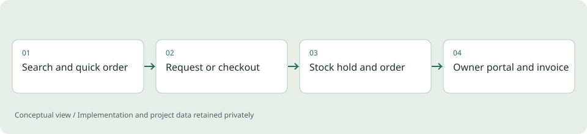

Conceptual illustration of the workflow, not a product screenshot.
The problem
A spare-parts shop has to show what is really in stock, hold it while a customer decides, and keep orders, mail and invoices consistent. A catalog page alone does not do that, and a wrong stock number costs a customer trust.
Project scope
A bilingual commerce application for vehicle-body parts. Customers search by part number, name or category, paste a list of article numbers for a quick order, save parts, and either send a non-binding request or check out. The owner workspace covers products, variants, prices, photos, stock, incoming requests, orders, returns, a shared customer inbox and team logins. Stock and parts can be imported in bulk from Excel, CSV or a PDF table, with a catalog-grounded assistant to help find parts.
Engineering decisions
- Hold stock transactionally with an expiry and recheck price and availability at the order boundary, so a basket never promises what the shelf cannot deliver.
- Make request submission idempotent and give customers a private reference and access code instead of an account.
- Import stock with a dry-run preview of every change and row error, then apply it in one transaction with a backup taken first.
- Treat payment, mail and ERP connections as adapters: hosted card checkout with signed webhooks, SMTP, IMAP, Microsoft 365 and Google Workspace mail, and a signed event outbox.
- Keep the assistant grounded in the real catalog, so it never invents a compatibility match.
- Record every owner change in an audit trail, and provide privacy export and anonymisation.
- Run locally with SQLite and one launcher, and with PostgreSQL under Docker Compose from the same code.
Outcome
A complete demonstration of a parts-commerce application: catalog, quick order, requests, checkout, stock holds, invoices, returns, inbox and scheduled backups. 171 automated backend tests cover stock, orders, import, mail, security and the owner workflows. No revenue or customer-adoption claim is made.
Limits and context
Live operation needs real accounts for payments and mail, approved product data and legal text, and acceptance testing against those providers. The tests ran on SQLite; PostgreSQL, Docker and the live integrations were not exercised. Scope is one country, one currency, one warehouse and whole-number quantities.